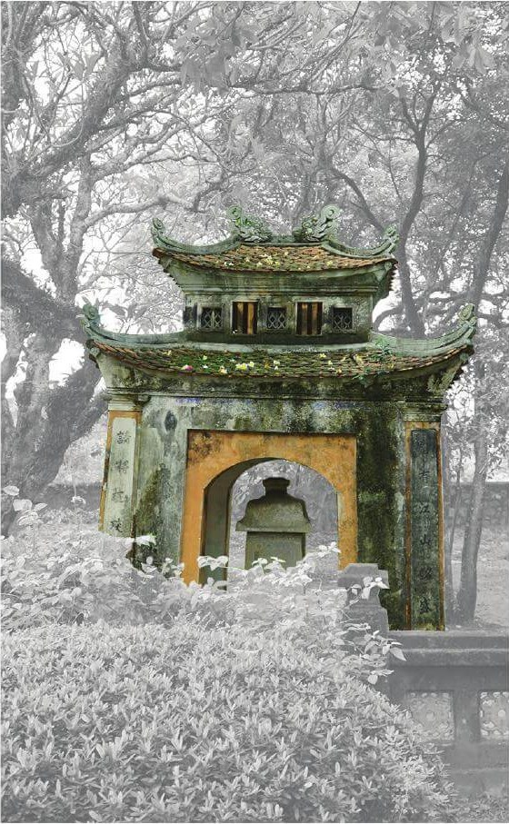

CỐ ĐÔ HOA LƯ
Hai nhà bia đền Lê

Tại đền thờ vua Lê Đại Hành hiện nay đang lưu giữ 2 văn bia có cùng niên đại thời Hậu Lê (thế kỷ XVII)
Văn bia phía bên trái của đền có tiêu đề "Trùng tu tạo tác thánh tượng tiền triều Lê Đại Hành hoàng đế bi ký tính danh”, ghi chép về việc trùng tu và tạo tác thánh tượng.
Diềm bia chạm khắc lưỡng Long chầu nhật. Đế bia được điêu khắc giật cấp, trông vững chắc và uy nghi.
Nội dung văn bia cho biết: năm 1611 thì hưng công tạc 3 pho tượng thánh, đến năm 1612 thì hoàn thành để có nơi thờ phụng. Quốc đảo dân cầu đều ứng nghiệm, ơn thánh đế cho thiên hạ thái bình.

Văn bia phía bên phải của đền có tiêu đề “Tiền triều Lê Đại Hành hoàng đế bi ký” được đặt trên lưng rùa khá lớn. Tấm bia được chạm khắc cầu kỳ, hoa văn được chạm ở cả 2 mặt. Với những nét chạm khắc tỉnh xảo, đề tài phong phú, văn bia này được nhận định là mẫu mực về dạng thức đồ án văn bia của Việt Nam.
Bia ca ngợi vua Lê Đại Hành là người khoan nhân thần vũ, trí dũng, thông minh, giữ 10 đạo quân, quyền cao phò ấu chúa, muôn phương dân tình yên đủ, bình trị thiên hạ…gây dựng chế độ, khuyến khích nông nghiệp, cày ruộng tịch điền, giảm tô thuế, tha tù tội, lập kỷ cương, đẩy mạnh phòng vệ…có thể gọi là công lao kỳ vĩ để đời sau noi theo, đức độ mà đời đời không thể quên được…đó chính là công đức.
Nội dung văn bia kết hợp cùng với đồ án trang trí đặc sắc đã cho du khách cảm nhận được một khí phách hùng tráng lan tỏa trên khắp tấm bia để hậu thế ngàn đời ngưỡng vọng.